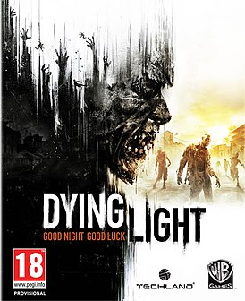

Про саму игру
Дайнг Лайт - компьютерная игра в жанре survival horror и action-adventure от первого лица с открытым миром, разработанная польской студией Techland и изданная Warner Bros. Interactive Entertainment в 2015 году для PlayStation 4, Xbox One, Microsoft Windows и Linux. После выхода дополнения The Following игра также стала доступна в составе Enhanced Edition.
После выхода игра получила большинство положительных отзывов от критиков. В частности они похвалили графику и окружающий проработанный мир. Также они сошлись в положительном мнении, что некоторые элементы геймплея (например паркур) хорошо проработаны, но требуют доработок. Второе крупное дополнение для игры Dying Light: The Following (в составе Enhanced Edition) оставила значительные положительные отзывы критиков, хвалившие улучшенный новый большой открытый мир (в сравнении с оригинальной игрой), отличное повествование сюжета, и улучшения в плане геймплея. За первые 45 дней после релиза было продано 3,2 миллиона копий Dying Light, что сделало её самой коммерчески успешной игрой Techland[4]. В августе 2015 было объявлено о продаже более 5 млн копий.
